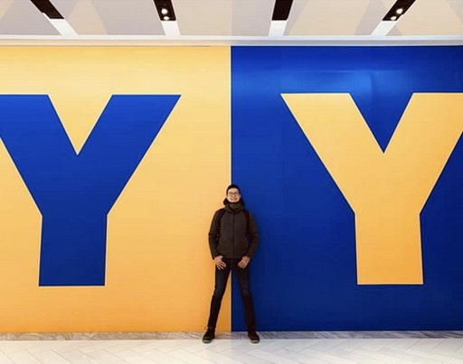

Yuan-Yen Tai, Ph.D. · Machine-learning scientist
I started in theoretical physics and mathematics, and have spent the past decade researching and engineering scalable solutions for high-complexity systems. From Amazon to Apple, I have taken five patented machine-learning innovations from concept to deployment, in large-scale infrastructure and on edge devices alike.

Audio identity for the GenAI era: a high-performance audio sign encoding / decoding system, from the device to the backend.
audionyx.ai ↗Audio Watermark Lab: invisible signatures that make a voice traceable to its origin.
aowl.app ↗One shared room for people and AI coding agents across machines, on iPhone, iPad, Mac and the web. Many colleagues at my company now use it to join their agents and finish projects together, and work faster for it.
avengents.ai ↗Also: neuron digitization, an algorithm for pre- and post-trained LLM modeling.
Machine learning & signal processing 2017 – 2023
Condensed-matter physics 2006 – 2019
Education
Condensed Matter Theory
University of Houston, Houston, TX · 2014